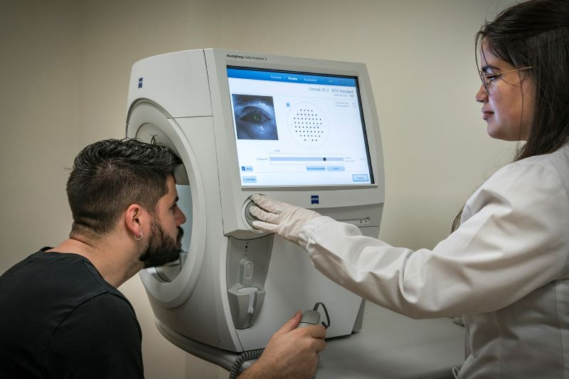
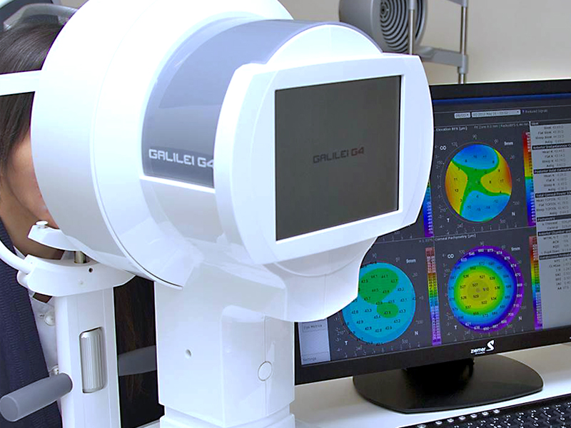
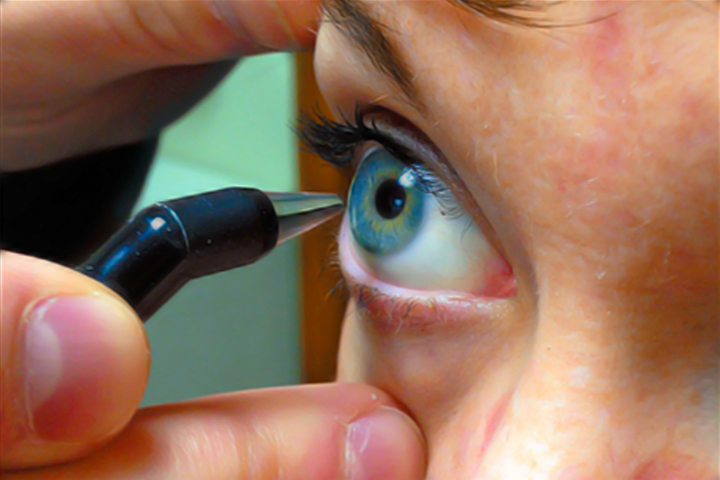
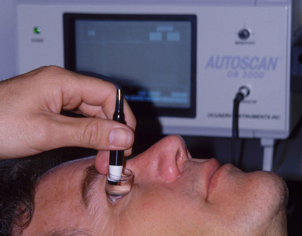
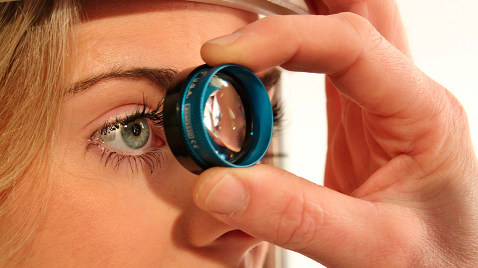
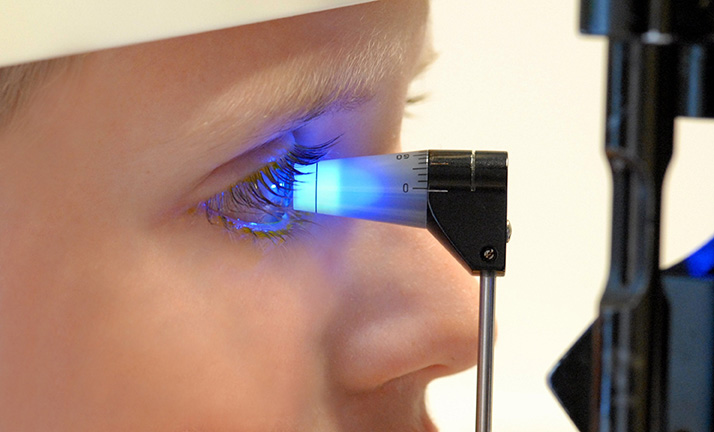

Campo Visual Computarizado
Análisis de la sensibilidad de la visión a ciertos
estímulos luminosos de diversas intensidades. Este estudio
se realiza principalmente ante casos de patologías
neurológicas cerebrales, daños en la vía óptica y
seguimiento de glaucoma.

Topografia Corneal Computarizada
Imagen de la superficie de la córnea que permite evaluar sus diferentes curvaturas.
Mediante su interpretación podemos:
Diagnosticar alteraciones corneales
Conocer la córnea antes y/o después de una
cirugíaAdaptar de forma correcta una lente de contacto.
Adaptar de forma correcta una lente de contacto.

Paquimetría Corneal
Medición por medio de ultrasonido del espesor de
la córnea. Este valor es importante ante casos de
glaucoma, presión intraocular y cirugías.

Ecometría
Medición que nos permite calcular el valor de la lente
intraocular que reemplazará el cristalino en una cirugía
de catarata.

Gonioscopía
Visualización del ángulo de la cámara anterior del
ojo, mediante la utilización de lentes especiales.
Nos ayuda a clasificar el glaucoma.

Curva de Presión Intraocular
Medición de la presión del ojo de suma importancia para
el maneja adecuado del tratamiento de glaucoma.

Tomografía de Coherencia Óptica
Técnica que permite la visualización de las estructuras
oculares empleando la emisión de ondas de luz. Esto
permite el seguimiento de patologías viteroretinianas,
de la mácula, del glaucoma, y de las enfermedades del
nervio óptico.